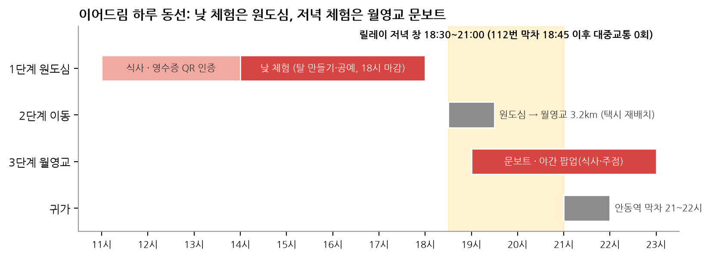
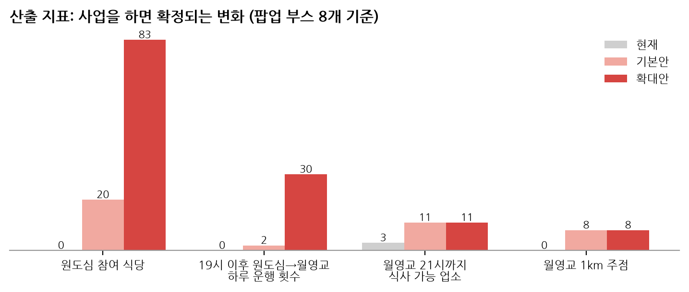
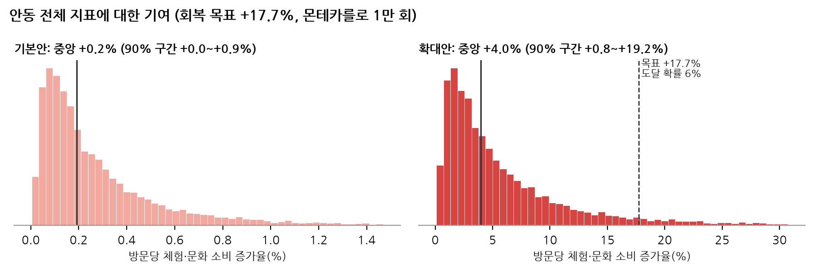
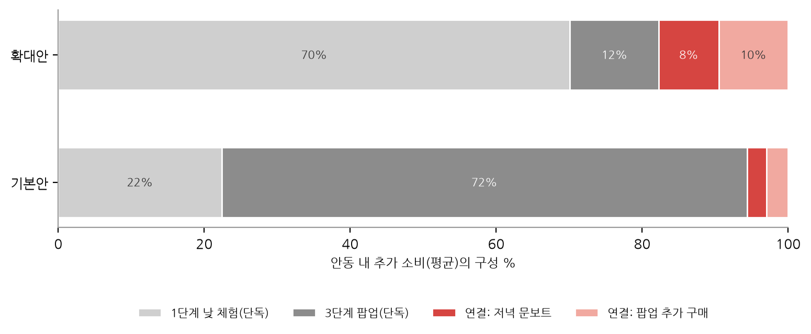
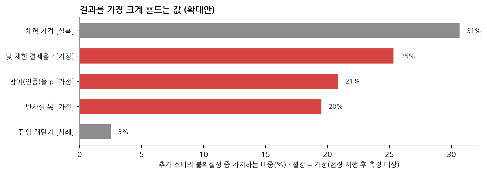

이어드림 3단계가 서식4 1)칸의 문제를 얼마나 개선하는지 예측했다. 단계마다 산출 지표(사업을 하면 확정되는 변화)와 결과 지표(그 결과 문제 지표가 바뀌는 정도)를 나눴다.
| 단계 | 해결하려는 문제(데이터) | 산출 지표 (사업을 하면 확정) | 결과 지표 (예측) |
|---|---|---|---|
| 1단계 식음 → 체험 | 방문 1위 중구동(12.5%) 혜택업체 0곳, 주민증 이용 95%가 관람지·체험 0.9% | 원도심 참여 식당 0곳 → n곳 | 릴레이 인증 건수, 체험 결제 건수, 방문당 체험·문화 소비(안동 전체 기여) |
| 2단계 야간 이동 | 원도심 → 월영교 3.2km, 19시 이후 대중교통 0회(112번 막차 18:45) | 19시 이후 하루 운행 0회 → n회 | 저녁 이동 인원(주말 하루) |
| 3단계 월영교 문보트·팝업 | 21시까지 식사 가능 16곳 중 3곳, 주점 0곳, 소비 전환 배율 0.40 | 식사 가능 3곳 → 3+n곳, 주점 0곳 → n곳 | 문보트 결제, 팝업 이용(주말 하루), 권역 외지인 관광소비 증가율 |
< 표 1 문제, 해결, 지표의 연결 >
문제 1은 증상(안동 전체 −16.8%)과 원인(원도심에서 체험으로 넘어가는 장치가 없음)으로 나눠 본다. 이어드림은 원인을 고치고, 그 효과를 증상으로 환산해 "격차 중 몇 %를 메우나"로 읽는다(아래 04의 격차 기여율). 시행 후에도 같은 틀로 검증한다(⑥ 검증계획서).
=> 문제 1 지표(방문당 체험·문화 소비)는 안동 전체 값이고 사업은 원도심에서 돈다. 그래서 결과 지표는 사업 규모 지표를 주로, 안동 전체는 "기여분"으로 읽는다.
먼저 보유 데이터로 파라미터와 그 불확실성을 추정하고(통계), 그 분포에서 1만 번 뽑아 계산했다(몬테카를로). 데이터가 없는 값은 "가정"으로 표시하고 결과를 얼마나 흔드는지 따로 보였다. 회귀나 머신러닝으로 바로 예측하지 않은 것은 3단계 릴레이를 해 본 지역이 없어 학습할 결과가 없기 때문이다.
| 파라미터 | 추정 방법 | 데이터 | 값 | 성격 |
|---|---|---|---|---|
| 참여(인증)율 p | 하한: 주민증 가맹 26곳 이용 실적 음이항 회귀로 원도심 식당 1곳 이용 예측 최빈: 반값여행 1차 신청 ÷ 월 방문 상한: 하회마을 주민증 이용률 | 주민증 가맹점 이용 표시값, 읍면동 외지인 방문, 입장객 통계 | 0.098% / 0.46% / 0.90% | 실측·사례 |
| 자연 완주율 c | 동시방문 규칙 역산: P(월영교 | 문화의거리) × 월영교 야간 검색 비중 | 철도공사 가명결합(2022.4~6), 야간관광 검색 | 0.148 ~ 0.169 | 추정 |
| 체험 가격 · 팝업 객단가 | 실측 목록을 그대로 재표본(부트스트랩) | 체험 27개 가격, 문화관광축제 56개 외지인 방문당 소비 | 중앙 12,000원 / 9,095원 | 실측·사례 |
| 야간 행사 효과(검증) | 월영야행 개최일 × 강남동/안동 외지인 소비 비중, 연·월 고정효과 회귀 | 강남동 월별 소비(2023.1~2026.8), 안동 카드 소비 | β -0.8%/일 (p=0.28) | 추정 |
| 낮 체험 결제율 r, 문보트·팝업 구매율, 팝업 강도 k, 반사실 몫 | 데이터 없음. 분포로 두고 민감도로 영향 확인 | 베타·삼각분포 | 가정 |
< 표 2 파라미터와 추정 방법 >
18시 이후에도 하는 체험은 월영교 문보트·황포돛배뿐이다. 그래서 낮 체험은 원도심에서, 저녁 체험은 월영교 문보트에서 하도록 동선을 짰다.

< 그림 1 이어드림 하루 동선 >
기본안은 참여 식당 20곳과 실측 기반 참여율, 확대안은 원도심 관광 식당 83곳 전부와 계산대 직접 권유(참여율 가정)다. 괄호는 1만 회 중 90% 모의실험 구간이다.
| 층 | 지표 | 현재 | 기본안 (식당 20곳) | 확대안 (83곳 · 계산대 권유) |
|---|---|---|---|---|
| 사업 지표 | 릴레이 인증(월) | 주민증 이용 887.5건 | 315 (147~503) | 6,604 (2,849~11,406) |
| 체험 결제(운영 8개월, 낮 + 문보트) | 주민증 체험 월 약 7건 | 664 (195~1,688) | 13,684 (3,847~36,493) | |
| 저녁 원도심 → 월영교 이동(주말 하루) | 19시 이후 대중교통 0회 | 5.7 (2.7~9.2) | 119.0 (50.8~208.1) | |
| 팝업 이용(주말 하루) | 48 (28~74) | 94 (58~143) | ||
| 산출 지표 | 원도심 참여 식당 | 0곳 | 20곳 | 83곳 |
| 19시 이후 하루 운행(4인 택시) | 0회 | 2회 | 30회 | |
| 월영교 21시까지 식사 가능 / 주점 | 3곳 / 0곳 | 11곳 / 8곳 | 11곳 / 8곳 | |
| 안동 전체 기여 | 방문당 체험·문화 소비 증가율 | 152.7원 | +0.19% (+0.04%~+0.89%) | +4.0% (+0.8%~+19.2%) |
| 회복 목표(+17.7%) 격차 중 메우는 비율 | 1.1 (0.2~5.0)% | 22 (4~108)% | ||
| 목표 도달 확률 / 목표에 필요한 참여율 | 0.0% / 37.8% | 5.9% / 9.3% | ||
| 권역(강남동) 외지인 관광소비 증가율 | +0.13% (+0.03%~+0.32%) | +0.25% (+0.05%~+0.61%) | ||
| 합계 | 안동 내 추가 소비(반사실 차감, 억 원) | 0.19 (0.06~0.43) | 1.03 (0.29~3.86) |
< 표 3 기본안과 확대안의 기대효과 (운영 8개월, 팝업 부스 8개) >

< 그림 2 산출 지표: 현재 → 사업 후 >

< 그림 3 안동 전체 지표에 대한 기여 분포 >
=> 사업 지표는 크게 움직인다(기본안 주민증 월 이용의 36% 규모, 확대안 7.4배). 안동 전체 지표는 기본안 +0.19%, 확대안 +4.0%로 회복 목표(+17.7%)의 일부를 채운다. 확대안은 저녁 이동이 하루 30회로 관광택시 재배치 한도(4대 × 3회 = 12회)를 넘어 셔틀 검토가 필요하다.
1단계와 3단계를 이어 주지 않고 따로 하면, 원도심 참여자가 저녁에 월영교에서 쓰는 돈은 생기지 않는다. 같은 모형에서 그 몫만 떼어 냈다: 릴레이로 월영교에 온 사람의 저녁 문보트 결제와, 팝업을 원래 살 비율보다 더 사는 몫이다(반사실 차감). 저녁 이동 인원은 사업 없이도 가는 자연 완주율(철도공사 역산 0.15~0.17)을 그대로 써서 보수적으로 잡았다.
| 기본안 | 확대안 | |
|---|---|---|
| 연결이 있어야 생기는 추가 소비(억 원) | 0.010 | 0.21 |
| 추가 소비 중 연결 몫 (λ = 1, 자연 완주율 그대로) | 5.6% | 21.0% |
| 연결 몫 (λ = 1.5 / 2, 연결이 저녁 이동을 늘릴 때) | 8.2% / 10.8% | 28.7% / 34.6% |
| 연결로만 생기는 저녁 문보트 결제 | 107건 | 2,221건 |
| 그중 2단계 교통이 없으면 불가능한 몫(차 없는 방문객 10.5%) | 11만 원 | 224만 원 |
< 표 4 잇는 효과 (λ = 연결이 저녁 이동 자체를 늘리는 배수, 가정) >

< 그림 5 안동 내 추가 소비의 구성 (1만 회 평균 금액 기준이라 표의 중앙값 비중과 조금 다르다) >
=> 확대안에서 추가 소비의 21%(연결이 저녁 이동을 2배로 늘리면 35%)는 단계를 이어야만 생긴다. 저녁에 할 수 있는 체험은 월영교 문보트뿐이라, 이 몫은 원도심과 월영교를 잇는 릴레이의 고유 효과다. 기본안은 참여 규모가 작아 이 몫도 5.6%에 그친다.

< 그림 4 결과를 가장 크게 흔드는 값 (확대안) >
| 결과를 흔드는 값 | 성격 | 언제 · 어떻게 잰다 | 엑셀에서 |
|---|---|---|---|
| 참여(인증)율 p | 기본 실측 · 확대 가정 | 토요일 현장: 안내카드 배포 수 대비 QR 스캔 수(계2). 관심 반응이므로 상한으로만 사용 | 입력 시트 p 분포 교체 |
| 낮 체험 결제율 r | 가정 | 시행 후: 인증 건수 n, 체험 결제 x | 관측값 칸 → 베타(a + x, b + n − x)로 자동 갱신 |
| 반사실 몫 | 가정 | 현장 설문: "이 혜택이 없었다면 이 돈을 안동에서 썼을까" | 관측값 칸 → 베타 갱신 |
| 팝업 객단가 · 팝업 강도 | 사례 · 가정 | 시행 후 팝업 결제 기록 | 입력 시트 교체 |
< 표 5 측정 계획과 예측 갱신 >
=> 결과를 가장 흔드는 값(체험 가격, 낮 체험 결제율, 참여(인증)율, 반사실 몫)이 토요일 현장조사와 시행 초기에 먼저 잴 값이다. 관측값을 엑셀에 넣으면 예측이 갱신된다.
파일: 엑셀 안동이어드림_기대효과_예측도구.xlsx(입력 → 1만 회 모의실험 → 결과·민감도·대시보드·서식4 문장), 계산 scripts/이어드림_파라미터추정.py · 이어드림_시뮬레이션.py